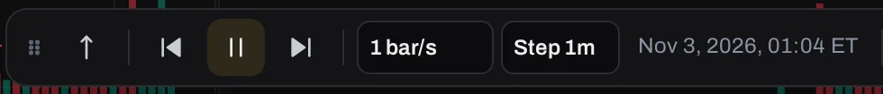
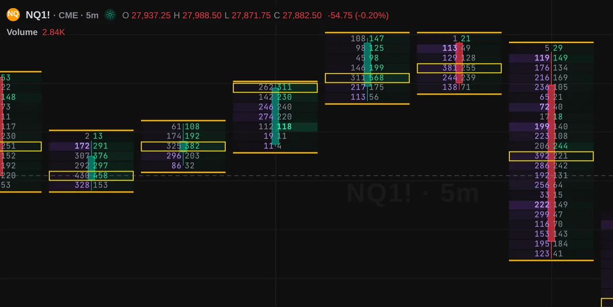
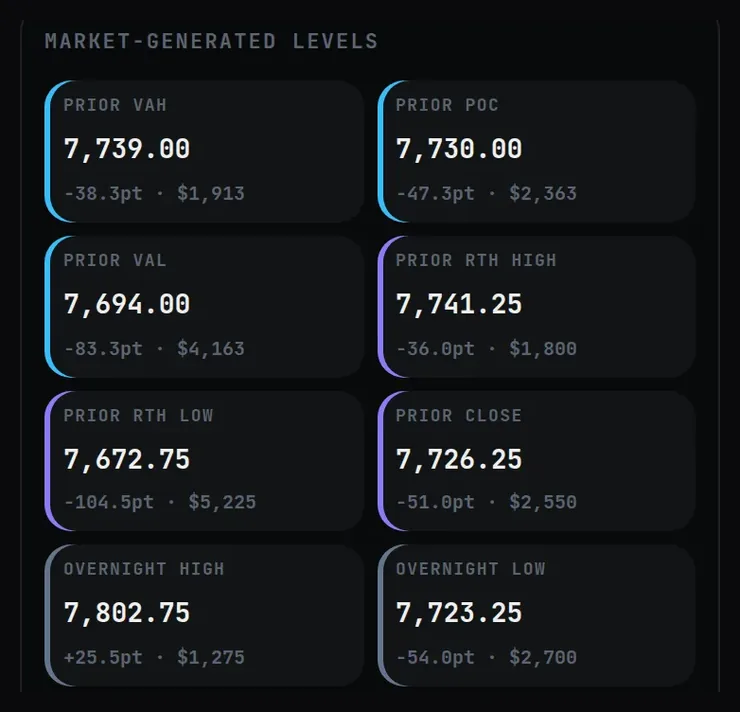
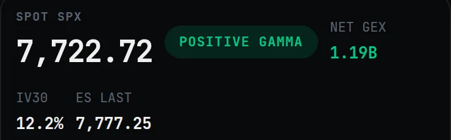
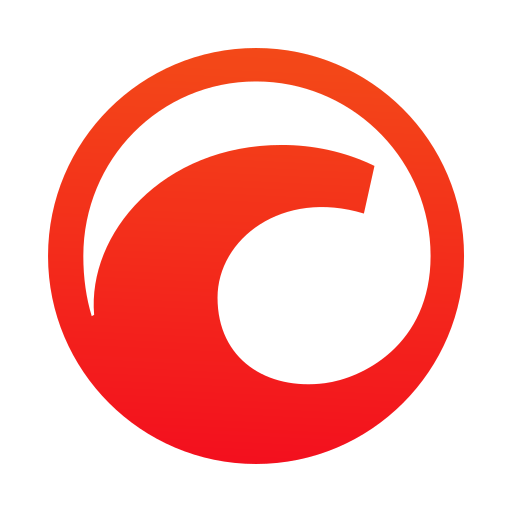
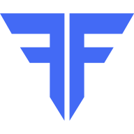

Read the tape, not just the candles. Order book, options levels and replay on one chart.
TradeZoro is a free charting site for futures and crypto. The chart below is drawn from NQ1! 15 minute bars recorded on 4 Nov 2026.


Four ways to look at one market.
Screen recordings of the real charts page. Pick a tool.
Liquidity heatmap
Resting orders from the order book, drawn as bands behind the candles. Brighter means more size.
Pan back to see where price met a band, and where the band was pulled.
Liquidity MapFootprint
Each candle split into volume sold at the bid and bought at the ask, at every price. The busiest price is boxed.
Order flow is a Pro tool.
Order flow toolsGEX levels
Call wall, zero gamma and put wall from SPX options, drawn as lines on the ES chart.
The recording is the 2 Oct 2026 session, so the levels are that day’s.
GEX+Replay One
Pick a start bar and step the chart forward. Later bars stay hidden until you play them.
Speed from one bar a second, step size set by you.
Replay OneEvery price inside the candle.
This is one real NQ1! 5 minute candle from the footprint. Left: sold at the bid. Right: bought at the ask. Hover or tap a row.
NQ1! 5m candle, 4 Nov 2026, read from the footprint on /charts. The boxed row is the busiest price.
The options levels, on the chart.
Gamma exposure estimates where options dealers may need to hedge. TradeZoro turns it into a few lines you can read.
- Call wallLevel above price
- Put wallLevel below price
- Zero gammaWhere net gamma flips sign
- Prior day levelsValue area, POC, RTH high and low
Context for a session, not a trade signal. Education only. Not financial advice.

SPX levels, Fri 2 Oct 2026, market closed.

Regime panel, same session.
Build your layout.
One chart, or up to sixteen in a single layout, with symbol, interval and crosshair synced if you want. Saved layouts follow you between phone and desktop.
4 charts
Everything on the site.
Ten tools. The charts, replay, journal, stats and screener are free. Order flow and GEX are Pro.
ZoroCharts 21 chart types
Futures, crypto and forex in the browser. Every interval, drawings, Pine scripts and up to 16 charts in one layout, with the same layouts on phone and desktop.
Open ZoroChartsOrder flow Pro
Footprint, delta, CVD, big trades, absorption, imbalance zones, volume profile and VWAP, in L1 and L2 versions.
Order flow toolsGEX+ Pro
Call wall, put wall and zero gamma from SPX, SPY, QQQ and GLD options, drawn on the ES, NQ and gold charts.
GEX+Liquidity Map Pro
The order book as a heatmap behind the candles, with trade bubbles on top. Crypto pairs.
Liquidity MapReplay One
Replay a past session bar by bar with the future hidden. Simulated orders only, then a review of each session.
Replay OneJournalX
A trade journal with a P&L calendar, analytics and a rules-based check of your own entries. Prop-firm tools for fees and payouts.
JournalXMarket Stats
How often NQ, ES and SPX gaps filled and opening ranges broke, with sample sizes and 95% intervals.
Market StatsScreener
US stocks, ETFs, crypto and futures. Filter, sort, pick columns, tap a row to open it on the chart.
Open ScreenerAlerts Up to 1,000
Price alerts and alerts on your indicators, with sounds. Futures and crypto price alerts are checked on our server and sent as a push.
About alertsConnect your own data
Alpaca, tastytrade, Dhan and OANDA connect from the page. Rithmic works with your own login. NinjaTrader 8, MT5 and IBKR connect through the desktop helper. Data only: TradeZoro never places real orders.
Data sourcesWorks with your broker.
Connect the account you already have, for data and your own positions view. Logos are the companies’ own marks.

cTrader
FyersAlpaca, tastytrade, Dhan and OANDA connect from the page. Rithmic uses your own login. NinjaTrader 8, MT5 and IBKR go through the desktop helper. TradeZoro uses these connections for data only and never places real orders.
Free, and Pro.
Everything below Pro stays free.
Free
Everything except order flow and GEX.
- All 21 chart types, every interval, drawings and Pine scripts
- Layouts of up to 16 charts and the Chart Library
- Replay One, paper trading and JournalX
- Alerts, Market Stats and the Screener
- Connect Alpaca, tastytrade, Dhan, OANDA or Rithmic
Pro
Everything in Free, plus who is trading and where size is waiting.
- Footprint, delta, CVD, big trades, absorption and imbalance zones
- Level 2 tools and the Liquidity Map
- GEX+ levels on the chart
- Order flow on NQ, ES, YM, GC, SI, CL and Binance pairs
Questions.
Is it free?
Yes. Every chart type, interval, indicator, drawing, layout, alert, paper trading and bar replay is on every plan. Pro adds the order flow tools and GEX on the charts.
Where does the data come from?
Crypto comes from public Binance, Coinbase and Hyperliquid feeds. CME futures run 10 minutes behind on free data, unless you connect your own Rithmic login. Futures order flow is built on our server from every trade and the side that started it.
Does it place real orders?
No. TradeZoro never places real orders. Paper trading and Replay One are simulated, and a Rithmic connection is used for data only.
Which markets have order flow and GEX?
Order flow covers NQ, ES, YM, GC, SI and CL with their micro contracts, plus Binance crypto pairs. GEX+ covers SPX, SPY, QQQ and GLD options, converted to ES, MES, NQ, MNQ and gold levels.
Does it work on my phone?
Yes. The chart is built for touch: pinch to zoom, drag to pan, menus open as sheets, and your layouts follow you between phone and desktop.